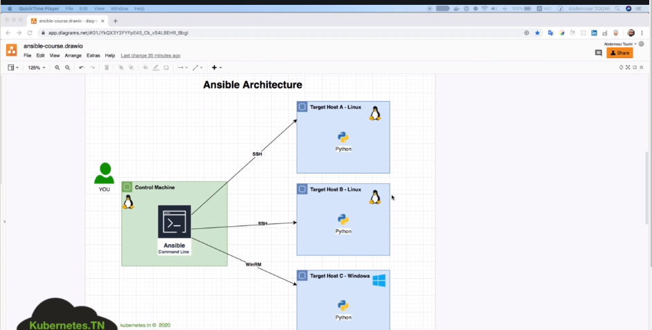
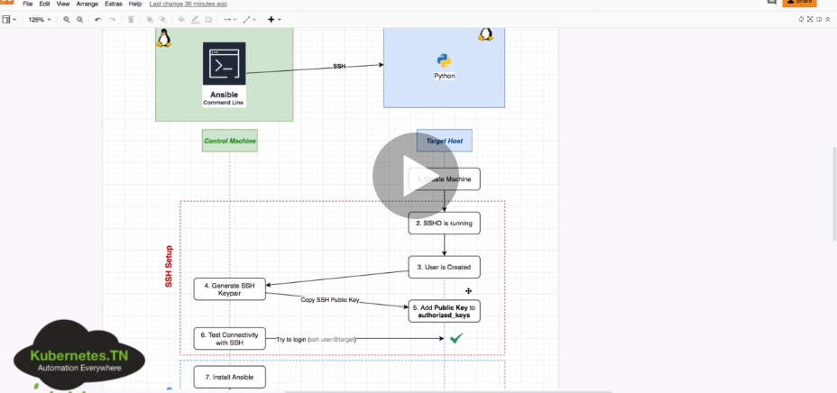
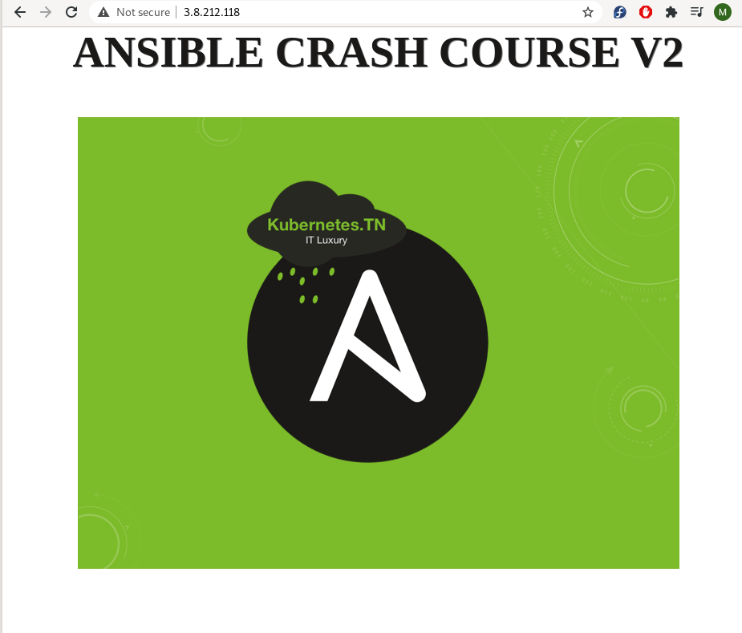

ANSIBLE
-
Es un software de gestión de la configuración automática y remota.
- Nos permite centralizar la configuración de numerosas servidores, dispositivos de red y Cloud Providers de una forma sencilla y automatizada.
-
Podremos aprovisionar servidores en AWS, Azure o VMWARE y automatizar la configuración de dichos servidores.
-
Ventajas:
- No requiere agentes
- Multiplataforma, eficiente y seguro
- Aprovisiona infraestructuras
- Configura dispositivos de red
-
Se necesita un Ansible Controller ejecutando en un SO Linux. Se puede administrar equipos Windows/Max pero el Ansible Controller debe ser LINUX.
Instalación
yum install ansibleRedHatdnf install ansibleFedoraapt-get install ansibleUbuntupip install ansiblePython-Pip-
brew install ansibleMAC -
ansible --versioncomprobamos la versión instalada.
Inventarios
- Ansible trabaja ejecutando tareas contra diferentes equipos remotos, dispositivos de red o APIs.
- Nos permiten definir dichos equipos, agruparlos y especificar valores grupales o individuales de los mismos.
-
Formato Ansible INI, YAML o JSON.
-
/etc/ansible/hostsfichero por defecto donde se define o ruta concreta-i file. -
ansbible.cfgfichero de configuración. -
EJEMPLO:
[masters] # nombre general
master ansible_host=IP/FQDN/service_docker ansible_user=remote_user ansible_private_key_file=xxx.pem # nombre - maqquina a conectar - usuario a conectar - private_key
- Comprobamos la conexión:
ansible -i inventory -m ping all
ansible -m ping -i hosts master-m de modulo -i fichero y maquina
master | SUCCESS => {
"ansible_facts": {
"discovered_interpreter_python": "/usr/bin/python"
},
"changed": false,
"ping": "pong"
}
Comando básico
ansible -i <inventory_path> -m {modulo} -a "{modulo opciones}" <nodos: all/master>-
Ejemplo:
ansible -i hosts -m shell -a "echo 'hola'" all -
Ejemplo:
ansible -i hosts -m shell -a "echo 'hola'" all - Ejemplo:
ansible -i hosts -m shell -a "ls -l /etc" all/masters - Ejemplo:
ansible -i hosts -b -m user -a "name=andy state=present shell=/bin/bash" allatacamos a todos los users(all) y le creamos un usuario andy. -b de superuser, con una shell concreta
Ayuda Ansible
ansible-doc -l
- Ejemplo de ayuda de un módulo concreto:
ansible-doc (-s) user
Playbook
-
Los Playbooks describen configuraciones, despliegue, y orquestación en Ansible. El formato del Playbook es YAML. Cada Playbook asocia un grupo de hosts a un conjunto de roles. Cada rol está representado por llamadas a lo que Ansible define como Tareas.
-
Ejemplo:
- name: Demo Install Ansible
hosts: all
become: yes
tasks:
## instalando ansible usando apt-get
- name: install ansible using apt
apt:
name: ansible
state: present
- Ejemplo:
cat play.yml
- hosts: test1
tasks:
- shell: echo "Hola Mundo desde Ansible y Jenkins" > /tmp/hola-ansible.txt
- Ejemplo:
- hosts: test1
tasks:
- debug:
var: MSG
- Ejemplo:
- hosts: test1
tasks:
- debug:
var: MSG
- debug:
msg: "Yo no me voy a ejecutar :("
tags: no-exec
- debug:
msg: "Yo sí me voy a ejecutar :)"
tags: si-exec
- Ejemplo completo de crear un user:
- hosts: master
become: yes # ser superuser
tasks:
- name: create user andy
user:
name: andy
state: present
shell: /bin/bash
- name: create user miguel
user: name=andy state= present
- ORDEN:
ansible-playbook -i hosts playbook.yml --syntax
ansible-playbook -i hosts playbook.yml --check (solo simula)
Módulos
- Conocidos también task plugins o library plugins, son unidades discretas de código que se pueden utilizar desde linea de comandos o playbook.
-
Se suelen utilizar en el nodo de destino remoto y recopila los valores de retorno. Se pueden utilizar en ad-hoc commands, playbooks y roles.
-
Ejemplo módulo apt:
- name: Demo Install Ansible
hosts: all
become: yes
tasks:
## instalando ansible usando apt-get
- name: install ansible using apt
apt:
name: ansible
state: present
- Ejemplo módulo authorized_keys:
- hosts: master
become: yes # ser superuser
tasks:
- name: create user andy
user:
name: andy
state: present
shell: /bin/bash
- name: create ssh keys
authorized_keys:
user: andy
key: "{{ item }}"
state: present
with_file:
- ~/.ssh/id_rsa.pub
no_log: yes
Variables
- Ejemplo de variables para Ansible:
- name: Demo Install Ansible
hosts: all
become: yes
## definimos las variables
vars:
package: ansible
state: present
tasks:
## instalando ansible usando apt-get
- name: install ansible using apt
apt:
name: "{{ package }}"
state: "{{ state }}"
Condicionales
- Realizar tareas segun ciertas cosas o parámetros:
- Ejemplo condicional:
- name: Demo Install Ansible
hosts: all
become: yes
## definimos las variables
vars:
package: ansible
state: present
tasks:
## instalando ansible usando apt-get
- name: install ansible using apt
apt:
name: "{{ package }}"
state: "{{ state }}"
## indicando la condicion de solo en master
when: "'master' in inventory_hostname"
Bucles
- Ejemplo de bucle:
- name: Demo Install Ansible
hosts: all
become: yes
tasks:
## instalando ansible usando apt-get
- name: install ansible using apt
apt:
name: "{{ item }}"
state: present
## indicando bucle de paquetes a instalar
loop:
- ansible
- apache2
- name: Demo Install Ansible
hosts: all
become: yes
tasks:
- name: create users
user:
name: "{{ item }}"
state: present/absent
## indicando bucle de crear users
with_items:
- andy
- miguel
- mario
Roles
- Los roles son formas de cargar automáticamente una estructura de archivos/directorios, archivos de variables, tareas y controladores basados en una estructura de archivos conocida.
- Agrupar contenido por roles permite compartir los roles con otros usuarios y poder reutilizar código.
-
Los roles esperan que los archivos esten en ciertos directorios, deben incluir al menos uno de estos.
-
Ejemplo de role:
- name: Play to demo roles
hosts: all
become: yes
## roles block
roles:
## the role we want to install
- apache ## dentro de este directorio hay muchos files, playbooks, tasks...
Ansible Galaxy
- Es un sitio gratuito para buscar, descargar, calificar y revisar toto tipo de roles de Ansible desarrollados por la comunidad y puede ser una excelente manera de impulsar nuestros proyectos de automatización.
-
El cliente ansible-galaxy está incluido en Ansible.
-
Ejemplo:
## ansible-galaxy
## install a role in 'roles' folder
ansible-galaxy install "ansible.docker" -p roles/
## create a role folders/files structure
ansible-galaxy init "my-role"
## search for a role
ansible-galaxy search 'docker'
Resumen
- Repaso de ansible.
- Es un software de gestión de la configuración automática y remota.
- Nos permite centralizar la configuración de numerosas servidores, dispositivos de red y Cloud Providers de una forma sencilla y automatizada.
- Podremos aprovisionar servidores en AWS, Azure o VMWARE y automatizar la configuración de dichos servidores.
-
Ventajas:
- No requiere agentes
- Multiplataforma, eficiente y seguro
- Aprovisiona infraestructuras
- Configura dispositivos de red
-
Se conecta por SSH.
Inventory
- Sirve para listar todos los hosts, todas las ips que tenemos que aprovisionar.
- Con
cat /etc/ansible/hostsvemos un ejemplo de los hosts que tenemos que administrar:
## [webservers] - nombre del grupo
## alpha.example.org
## beta.example.org
## 192.168.1.100
## 192.168.1.110
## db[01:03].intranet.mydomain.net
## db02.intranet.mydomain.net
- Probamos conexión con algun hosts poniendo
ansible alpha.example.org -m ping:
[isx46410800@miguel miguelamoros.github.io]$ ansible localhost -m ping
localhost | SUCCESS => {
"changed": false,
"ping": "pong"
}
- Podemos indicarle otro fichero con otros host poniendo la opción -i file_hosts.
Módulos
-
Por defecto si no pongo el modulo -m, coge shell como módulo:
[isx46410800@miguel miguelamoros.github.io]$ ansible localhost -a 'echo hola miguel'
localhost | CHANGED | rc=0 >>
hola miguel
#
[isx46410800@miguel miguelamoros.github.io]$ ansible localhost -m shell -a 'uname -a'
localhost | CHANGED | rc=0 >>
Linux miguel 5.3.11-100.fc29.x86_64 #1 SMP Tue Nov 12 20:41:25 UTC 2019 x86_64 x86_64 x86_64 GNU/Linux
- Instalamos un paquete en la máquina remota como superusuario(-b) y preguntando la contraseña de root en esa máquina(-K):
[isx46410800@miguel miguelamoros.github.io]$ ansible localhost -b -K -m dnf -a 'name=vim state=present'
BECOME password:
localhost | SUCCESS => {
"changed": false,
"msg": "Nothing to do",
"rc": 0,
"results": []
}
Playbook
- Se escribe un yaml y son objetos que se escriben tareas que han de hacer en nuestras máquinas remotas:
---
- hosts: localhost
tasks:
- name: instala vim
dnf: name=vim state=present
become: true
- name: saludar
shell: echo hola
- Resultado:
[isx46410800@miguel ansible]$ ansible-playbook playbook01.yaml -K
BECOME password:
[WARNING]: provided hosts list is empty, only localhost is available. Note that the implicit localhost does not
match 'all'
PLAY [localhost] ****************************************************************************************************
TASK [Gathering Facts] **********************************************************************************************
ok: [localhost]
TASK [instala vim] **************************************************************************************************
ok: [localhost]
TASK [saludar] ******************************************************************************************************
changed: [localhost]
PLAY RECAP **********************************************************************************************************
localhost : ok=3 changed=1 unreachable=0 failed=0 skipped=0 rescued=0 ignored=0
- otro ejemplo que maneja servicios:
- hosts: localhost
become: true
tasks:
- name: instala vim
dnf: name=vim state=present
- name: saludar
shell: echo hola
- name: detener apache
service: name=httpd state=stopped
Usuarios
- Podemos poner el usuario con la opción -u. No obstante en el fichero de configuración /etc/ansible/ansible.cfg podemos poner [defaults]remote_users=miguel y entonces cada orden cogerá como usuario miguel.
- Podemos cargar otro fichero de conf poniendo ANSIBLE_CONFIG=ruta_file_cfg.
Handlers
- Le pide a ansible que cuando haga una tarea success lo notifique para poder hacer otras cosas.
isx46410800@miguel ansible]$ cat playbook02.yaml
---
- hosts: localhost
become: true
tasks:
- name: instala apache
dnf: name=httpd state=present update_cache=true
notify:
- "Reinicia el servidor web"
handlers:
- name: reinicia el server apache
service: name=httpd state=restarted
[isx46410800@miguel ansible]$ ansible-playbook playbook02.yaml -K
BECOME password:
[WARNING]: provided hosts list is empty, only localhost is available. Note that the implicit localhost does not
match 'all'
PLAY [localhost] ****************************************************************************************************
TASK [Gathering Facts] **********************************************************************************************
ok: [localhost]
TASK [instala apache] ***********************************************************************************************
ok: [localhost]
PLAY RECAP **********************************************************************************************************
localhost : ok=2 changed=0 unreachable=0 failed=0 skipped=0 rescued=0 ignored=0
Nos saldría una notificación de un handler al instalar, no sale porque ya estaba instalado.
CURSO COMPLETO
Environment
- Vemos un ejemplo de como es un ambiente con Ansible, conectando una máquina central con el lenguaje Ansible hacia otros hosts con sistemas operativos y ordenando que tiene que tener cada cosa y como conectarse:


-
Nos conectamos a una instancia ubuntu aws por ssh:
[isx46410800@miguel .ssh]$ ssh -i mykeypair.pem ubuntu@18.134.164.27 -
Con el un usuario ubuntu de aws, creamos llaves para conectarnos a ese user:
ubuntu@ip-172-31-23-107:~$ sudo su -
root@ip-172-31-23-107:~# useradd ansible_user
root@ip-172-31-23-107:~# passwd ansibler_user
[isx46410800@miguel .ssh]$ ssh-keygen
-rw-------. 1 isx46410800 isx46410800 2602 Apr 2 23:22 ansibleuser
-rw-r--r--. 1 isx46410800 isx46410800 572 Apr 2 23:22 ansibleuser.pub
root@ip-172-31-23-107:/home/ubuntu/.ssh# vi authorized_keys
root@ip-172-31-23-107:/home/ubuntu# chown -R ubuntu .ssh/
-
Ahora podremos conectarnos con la llave privada al usuario ubuntu sin autenticar al tener copiada la llave publica:
[isx46410800@miguel .ssh]$ ssh -i ansibleuser ubuntu@18.134.164.27 -
Nos conectamos a un docker con fedora:
[isx46410800@miguel curso_ansible]$ docker run --name container -h container -p 2222:22 --privileged -d isx46410800/ansible:ssh -
Creamos un usuario y copiamos también las llaves al usuario para conectarnos:
[root@container docker]# adduser fedora
[root@container docker]# passwd fedora
[root@container docker]# cd /home/fedora/
[root@container fedora]# mkdir .ssh
[root@container fedora]# chmod 700 .ssh
[root@container fedora]# vi .ssh/authorized_keys
[root@container fedora]# chmod 600 .ssh/authorized_keys
[root@container fedora]# chown -R fedora /home/fedora/.ssh
Inventory
- Creamos un primer inventario para conectarnos a la máquina de amazon:
# conexión a un host remoto, indicando nombre host, ip, llave y usuario al que conectamos
ec2 ansible_host=18.134.164.27 ansible_private_key_file=~/.ssh/ansible_user ansible_ssh_user=ubuntu
- Probamos con la orden ansible -i inventario nombre_host -atributo opcion del atributo:
[isx46410800@miguel curso_ansible]$ ansible -i inventory01 ec2 -m ping
ec2 | SUCCESS => {
"ansible_facts": {
"discovered_interpreter_python": "/usr/bin/python3"
},
"changed": false,
"ping": "pong"
}
- El fichero de configuración de ansible está en /etc/ansible/ansible.cfg.
# este fichero de configuración se escriben reglas para grupos de hosts o hosts sueltos donde irán a buscar las cosas
por defecto a este archivo(/etc/ansible/ansible.cfg)
[defaults]
INVENTORY=./inventory01
- Vemos que conecta igual poniendo el inventario como que no:
[isx46410800@miguel curso_ansible]$ ansible ec2 -m ping
ec2 | SUCCESS => {
"ansible_facts": {
"discovered_interpreter_python": "/usr/bin/python3"
},
"changed": false,
"ping": "pong"
}
Módulos
-
Los módulos son la cantidad de opciones que podemos hacer a la hora de conectarnos con las máquinas: ping, package, service...
-
Vemos todas con la orden
ansible-doc --list:
ansible-doc file -
Hacer un ping:
ansible -i inventory01 ec2 -m ping -
Crear un directorio/file(absent, directory, file, hard, link, touch):
ansible -i inventory01 ec2 -m file -a 'path=/home/ubuntu/crear_directorio state=directory'
ansible -i inventory01 ec2 -m file -a 'path=/home/ubuntu/crear_directorio state=directory'
ec2 | CHANGED => {
"ansible_facts": {
"discovered_interpreter_python": "/usr/bin/python3"
},
"changed": true,
"gid": 1000,
"group": "ubuntu",
"mode": "0775",
"owner": "ubuntu",
"path": "/home/ubuntu/crear_directorio",
"size": 4096,
"state": "directory",
"uid": 1000
}
ubuntu@ip-172-31-23-107:~$ ls
crear_directorio
[isx46410800@miguel curso_ansible]$ ansible -i inventory01 ec2 -m file -a 'path=/home/ubuntu/crear_directorio/crear_file.txt state=touch'
ec2 | CHANGED => {
"ansible_facts": {
"discovered_interpreter_python": "/usr/bin/python3"
},
"changed": true,
"dest": "/home/ubuntu/crear_directorio/crear_file.txt",
"gid": 1000,
"group": "ubuntu",
"mode": "0664",
"owner": "ubuntu",
"size": 0,
"state": "file",
"uid": 1000
}
ubuntu@ip-172-31-23-107:~$ ls crear_directorio/
crear_file.txt
- Copiar un fichero:
[isx46410800@miguel curso_ansible]$ ansible -i inventory01 ec2 -m copy -a 'src=./ansible.cfg dest=/home/ubuntu/crear_directorio'
ec2 | CHANGED => {
"ansible_facts": {
"discovered_interpreter_python": "/usr/bin/python3"
},
"changed": true,
"checksum": "bf35d403c825217ade9f009d13cbdd6fc0a3078f",
"dest": "/home/ubuntu/crear_directorio/ansible.cfg",
"gid": 1000,
"group": "ubuntu",
"md5sum": "15b402b635fbd568d10b82d4b67da871",
"mode": "0664",
"owner": "ubuntu",
"size": 208,
"src": "/home/ubuntu/.ansible/tmp/ansible-tmp-1617401616.4248621-11162-62473546166429/source",
"state": "file",
"uid": 1000
}
ubuntu@ip-172-31-23-107:~$ ls crear_directorio/
ansible.cfg crear_file.txt
# otro ejemplo de crear un file con contenido y copiarlo
ansible ec2 -m copy -a "content='TopSecret' dest='/opt/data/secret.txt'"
- Añadir una linea a un fichero:
[isx46410800@miguel curso_ansible]$ cat file.txt
fichero de ejemplo para modulo de añadir lineas
[isx46410800@miguel curso_ansible]$ ansible -i inventory01 ec2 -m lineinfile -a 'path=/home/ubuntu/crear_directorio/file.txt line="añadimos esto al modulo lineinfile"'
ec2 | CHANGED => {
"ansible_facts": {
"discovered_interpreter_python": "/usr/bin/python3"
},
"backup": "",
"changed": true,
"msg": "line added"
}
ubuntu@ip-172-31-23-107:~$ cat crear_directorio/file.txt
fichero de ejemplo para modulo de añadir lineas
añadimos esto al modulo lineinfile
- Descargar contenido de un URL y enviarlo en un fichero a un host remoto:
[isx46410800@miguel curso_ansible]$ ansible -i inventory01 ec2 -m uri -a 'url=https://api.github.com/users/isx46410800/repos dest=/home/ubuntu/crear_directorio/repos.json'
- Instalar/borrar un paquete:
[isx46410800@miguel curso_ansible]$ ansible -i inventory01 ec2 -m package -a 'name=vim state=present' -b
[isx46410800@miguel curso_ansible]$ ansible -i inventory01 ec2 -m package -a 'name=vim state=present' --become
-b para ser superusuario -k para preguntar passwd
si hemos creado un user vamos a la maquina y añadimos en la fichero /etc/sudoers: user ALL=(ALL:ALL) NOPASSWD:ALL
-
Encender un servicio:
ansible ec2 -m service -a "name=nginx state=started" -
Crear un usuario:
ansible ec2 -m user -a "name=miguel state=present"
Playbooks
- En vez de hacerlo en una linea con comandos, se crea un playbook en formato YAML para hacer ahi el listado de tareas a realizar a los hosts:
- name: primer ejemplo playbook
hosts: ec2
tasks:
# creamos un file con contenido dentro
- name: hello file is copied
copy:
content: "Hello World"
dest: /home/ubuntu/crear_directorio/hello.txt
# creamos un segundo file con contenido dentro
- name: hi file is copied
copy:
content: "Hi World"
dest: /home/ubuntu/crear_directorio/hi.txt
# comprimimos estos dos ficheros
- name: hello and hi files compressed
archive:
path:
- /home/ubuntu/crear_directorio/hello.txt
- /home/ubuntu/crear_directorio/hi.txt
dest: /home/ubuntu/crear_directorio/hh.zip
format: zip
-
Lo lanzamos con la orden:
[isx46410800@miguel curso_ansible]$ ansible-playbook playbook01.yaml -
Ejemplo de deploy de una web al host remoto:
[isx46410800@miguel curso_ansible]$ cat playbook02-web-static.yaml
- name: ejemplo deploy web static
hosts: ec2
become: yes
tasks:
# instalamos apache
- name: installing apache server
package:
name: apache2
state: present
# encendemos el servicio apache
- name: apache running
service:
name: apache2
state: started
# creamos el directorio de var para meter la web de index.html
- name: creating var directory
file:
path: /var/www/html
state: directory
# deploy web statica
- name: static website is deployed
uri:
url: https://raw.githubusercontent.com/abdennour/example-static-website/ansible-course/index.html
dest: /var/www/html #/usr/share/nginx/html
- Resultado:
[isx46410800@miguel curso_ansible]$ ansible-playbook playbook02-web-static.yaml
PLAY [ejemplo deploy web static] *************************************************************************************
TASK [Gathering Facts] ***********************************************************************************************
ok: [ec2]
TASK [installing apache server] ***************************************************************************************
ok: [ec2]
TASK [apache running] *************************************************************************************************
ok: [ec2]
TASK [creating var directory] ****************************************************************************************
ok: [ec2]
TASK [static website is deployed] ************************************************************************************
changed: [ec2]
PLAY RECAP ***********************************************************************************************************
ec2 : ok=5 changed=1 unreachable=0 failed=0 skipped=0 rescued=0 ignored=0
Variables
- Podemos usar variables en el fichero de playbook para no tener que escribir lo mismo:
- name: ejemplo deploy web static
hosts: ec2
become: yes
vars:
webserver: apache2
webserver_dir: /var/www/html
tasks:
# debug sirve para mostrar mensajes
- name: debug
debug:
msg: "El valor del servidor es {{ webserver }}"
# instalamos apache
- name: installing apache server
package:
name: "{{ webserver }}"
state: present
# encendemos el servicio apache
- name: apache running
service:
name: "{{ webserver }}"
state: started
# creamos el directorio de var para meter la web de index.html
- name: creating var directory
file:
path: "{{ webserver_dir }}"
state: directory
# deploy web statica
- name: static website is deployed
uri:
url: https://raw.githubusercontent.com/abdennour/example-static-website/ansible-course/index.html
dest: "{{ webserver_dir }}" #/usr/share/nginx/html
- También podemos poner en la orden de ansible-playbook la opcion --extra-vars e indicar la variable y contenido y piyaría esa variable como prioridad en vez de la del playbook:
[isx46410800@miguel curso_ansible]$ ansible-playbook playbook04-debug-vars-web-static.yaml
PLAY [ejemplo deploy web static] *************************************************************************************
TASK [Gathering Facts] ***********************************************************************************************
ok: [ec2]
TASK [debug] *********************************************************************************************************
ok: [ec2] => {
"msg": "El valor del servidor es apache2"
}
#
[isx46410800@miguel curso_ansible]$ ansible-playbook playbook04-debug-vars-web-static.yaml --extra-vars webserver=httpd
PLAY [ejemplo deploy web static] *************************************************************************************
TASK [Gathering Facts] ***********************************************************************************************
ok: [ec2]
TASK [debug] *********************************************************************************************************
ok: [ec2] => {
"msg": "El valor del servidor es httpd"
}
- Tabién se puede crear un fichero de variables y llamar a donde están las variables:
[isx46410800@miguel curso_ansible]$ cat vars.yaml
webserver: apache2
webserver_dir: /var/www/html
#
- name: ejemplo deploy web static
hosts: ec2
become: yes
vars_files:
- vars-yaml
tasks:
# debug sirve para mostrar mensajes
- name: debug
debug:
msg: "El valor del servidor es {{ webserver }}"
- Ejemplo pipeline con diferentes Branchs de git:
- name: ejemplo deploy web static
hosts: ec2
become: yes
vars:
webserver: apache2
webserver_dir: /var/www/html
git_branch: ansible-course-index-v2
tasks:
# instalamos apache
- name: installing apache server
package:
name: "{{ webserver }}"
state: present
# encendemos el servicio apache
- name: apache running
service:
name: "{{ webserver }}"
state: started
# creamos el directorio de var para meter la web de index.html
- name: creating var directory
file:
path: "{{ webserver_dir }}"
state: directory
# deploy web statica
- name: static website is deployed
uri:
url: https://raw.githubusercontent.com/abdennour/example-static-website/{{ git_branch }}/index.html
dest: "{{ webserver_dir }}" #/usr/share/nginx/html
- Podemos crear una variable de registro con el contenido de una tarea:
- name: ejemplo deploy web static
hosts: ec2
become: yes
tasks:
# instalamos apache
- name: installing apache server
package:
name: apache2
state: present
register: apache_install_output
- name: print register in terminal
debug:
var: apache_install_output
- name: copy the output
copy:
content: "{{ apache_install_output }}"
dest: /home/ubuntu/crear_directorio/register.txt
- Ansible facts:
- name: ansible facts
hosts: ec2
become: yes
#gather_facts: no
tasks:
# print ansible_facts
- name: print ansible_facts
debug:
var: ansible_facts
se puede poner con una variable de gather_facts: no y no saldrian los facts
Otras variables como inventory_hostaname, hostvars, group_names, groups...
Práctica DEV y PROD
-
Nos queremos conectar a 3 instancas AWS, una de dev y dos de prod.
-
Creamos nuevo inventario:
### conexion para una maquina de desarrollo y dos de produccion
dev1 ansible_host=35.177.51.40 ansible_private_key_file=~/.ssh/ansible_user ansible_ssh_user=ubuntu
prod1 ansible_host=3.8.212.118 ansible_private_key_file=~/.ssh/ansible_user ansible_ssh_user=ubuntu
prod2 ansible_host=35.178.101.37 ansible_private_key_file=~/.ssh/ansible_user ansible_ssh_user=ubuntu
[prod]
prod1
prod2
[dev]
dev1
-
Probamos conexión despues de meterle la llave publica a cada uno:
[isx46410800@miguel curso_ansible]$ ansible -i inventory02_prod_dev all -m ping -
Podemos simplicar variables añadiendo un grupo de variables:
### conexion para una maquina de desarrollo y dos de produccion
dev1 ansible_host=35.177.51.40 ansible_private_key_file=~/.ssh/ansible_user ansible_ssh_user=ubuntu
prod1 ansible_host=3.8.212.118
prod2 ansible_host=35.178.101.37
[prod]
prod1
prod2
[prod:vars]
ansible_private_key_file=~/.ssh/ansible_user
ansible_ssh_user=ubuntu
git_branch=ansible-course-index-v2
[dev]
dev1
[dev:vars]
git_branch=ansible-course
Tambien se puede crear un directorio host_vars -> dev1 --> vars.yaml con las 3 variables asignadas separados por dos puntos.
tambien se puede crear un directorio group_vars -> prod -> vars.yaml con las variables del grupo prod:vars. Luego se borraria porque ya las tenemos ahí.
- Resultados:
[isx46410800@miguel curso_ansible]$ ansible-playbook playbook09-proyect_dev-prod.yaml
PLAY [ejemplo deploy en dev y prod] **********************************************************************************
TASK [Gathering Facts] ***********************************************************************************************
ok: [prod1]
ok: [dev1]
ok: [prod2]
TASK [installing apache server] **************************************************************************************
ok: [prod1]
ok: [prod2]
changed: [dev1]
TASK [apache running] ************************************************************************************************
ok: [prod1]
ok: [dev1]
ok: [prod2]
TASK [creating var directory] ****************************************************************************************
ok: [prod1]
ok: [dev1]
ok: [prod2]
TASK [static website is deployed] ************************************************************************************
changed: [prod1]
changed: [prod2]
changed: [dev1]
PLAY RECAP ***********************************************************************************************************
dev1 : ok=5 changed=2 unreachable=0 failed=0 skipped=0 rescued=0 ignored=0
prod1 : ok=5 changed=1 unreachable=0 failed=0 skipped=0 rescued=0 ignored=0
prod2 : ok=5 changed=1 unreachable=0 failed=0 skipped=0 rescued=0 ignored=0


- Vemos la info de variables mágicas:
- name: play for discover magic variables
hosts: dev,prod
tasks:
- name: print inventory_hostname
debug:
var: inventory_hostname
- name: print hostvars
debug:
var: hostvars
- name: print group_names
debug:
var: group_names
- name: print groups
debug:
var: groups
[isx46410800@miguel curso_ansible]$ ansible-playbook 10-playbook-magic_variables.yaml > magic.tmp
- Podemos conseguir la info de un host con la orden ansible-inventory:
[isx46410800@miguel curso_ansible]$ ansible-inventory --host dev1
{
"ansible_host": "35.177.51.40",
"ansible_private_key_file": "~/.ssh/ansible_user",
"ansible_ssh_user": "ubuntu",
"git_branch": "ansible-course"
}
*https://github.com/abdennour/ansible-course*